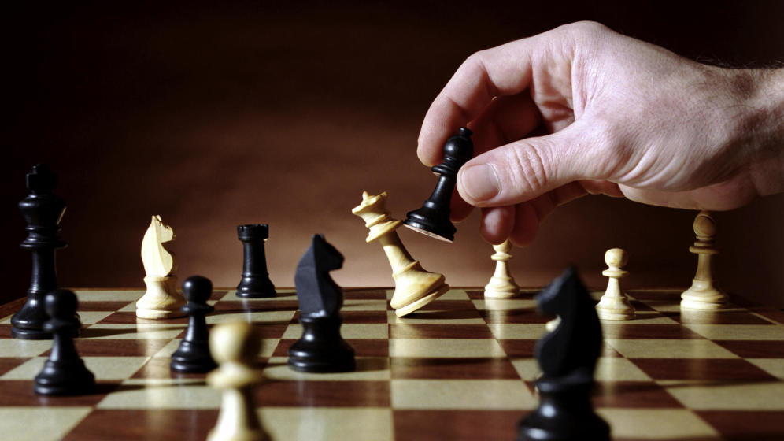

Las reglas básicas para jugar al ajedrez:
El principal objetivo del ajedrez es dar jaque mate al rey contrario. Esto se produce cuando el rey no puede moverse a ninguna casilla, ya que en todas ellas estaría amenazado por las piezas contrarias. No obstante, hay casos en los que una partida puede llegar a las tablas (empate). Una situación que puede darse cuando en el tablero no hay suficientes piezas para hacer un mate, cuando ambos jugadores acuerdan tablas, cuando la misma situación se repite tres veces seguidas o cuando se han realizado 50 movimientos y ninguno de los jugadores ha movido un peón ni capturado una pieza.
Junto al movimiento de las piezas, el ajedrez presenta una serie de reglas básicas que debemos conocer:
Si un peón logra llegar al otro extremo del tablero, se puede coronar como dama (se cambia el peón y se sitúa en su lugar una dama)
El enroque es una de las reglas del ajedrez por la cual podemos mover en un solo turno al rey dos casillas hacia un lado y situar a la torre en el lado opuesto del rey. No obstante, para hacer un enroque debe ser la primera jugada del rey y de la torre, no puede haber ninguna pieza entre ambos y el rey no puede hallarse en jaque
